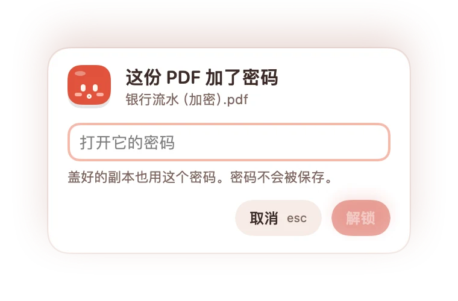
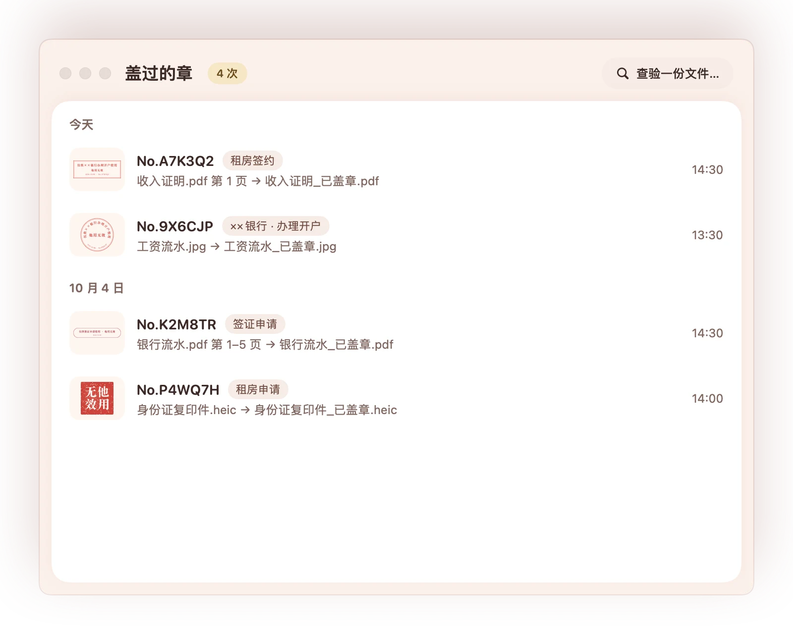

多页 PDF，每一页都盖
银行流水十几页？选“每一页都盖”，位置按比例对齐到每一页。哪页不要，点掉缩略图就行。
一分钟看懂
办签证、开银行账户、租房，都要交一沓证件复印件。可复印件一交出去，就可能被挪作他用。盖上“仅供××使用”，这份复印件就只能用在这件事上。
三步盖好
不用导出、不用打开别的软件，就在你平时看文件的预览里。
点一下菜单栏里的小章，印章就跟着鼠标走。再点一下，或者按 esc，就放下。
移到预览里打开的 PDF 或照片上，滚轮调大小，点一下就盖。章永远完整地留在纸里，不会被页边切掉。
确认一下，存成“_已盖章”的副本。原件一个像素都不动，想重盖随时再来。
批量盖章
办签证、开户要交十几份复印件？把文件，或者整个文件夹，拖到菜单栏的小章上，选好章和位置，一键盖完。这一路连预览都不用开。
试一试
鼠标就是印章：滚轮调大小，点一下就盖。点一下纸就盖一个，下面的 −/+ 调大小。这些章和 App 用的是同一个引擎画的。
为什么是小章
银行流水十几页？选“每一页都盖”，位置按比例对齐到每一页。哪页不要，点掉缩略图就行。
长章约 35mm，圆章 22mm，方印 7mm。压在签名旁边刚刚好，不会把材料盖花。
盖章只发生在另存的副本上。原件还是原件，不怕盖错。
输一次密码就行。盖好的副本用同一个密码锁上，密码不会被保存。

章上带日期和编号。在“盖过的章”里查得到哪天、给谁、盖了哪份。

盖章全在你的 Mac 上完成。证件、流水这些材料，不会上传到任何地方。
刻章工坊
从 17 个模板开始：常用、复印件、英文、方印。写给谁、做什么、字体、边框、颜色、印泥质感，都能改。
认识一下
它住在你的菜单栏里。拿起印章时会期待，盖好了会开心，遇到点小麻烦会皱眉，闲着的时候会打瞌睡。
点点它试试。
隐私说明
盖章全程在你的 Mac 上完成：读页面、画章、存副本，你的文件不会上传到任何地方，盖过的记录也只存在你自己的电脑里。小章只在你点“检查更新…”时连一下网站，看看有没有新版本；不收集任何信息，也不会自己下载安装。
常见问题
在预览里打开的 PDF 和照片（JPG、PNG、HEIC 等）都可以。多页 PDF 可以只盖一页，也可以每一页都盖；加了密码的 PDF，输一次密码也能盖。
不会。章只盖在另存的副本上，副本默认叫“原文件名_已盖章”，存在原文件旁边。另存时也不能覆盖原文件，原件一个像素都不动。
不会。盖章全程在你的 Mac 上完成：读页面、画章、存副本，你的文件不会上传到任何地方，盖过的记录也只存在你自己的电脑里。小章只在你点“检查更新…”时连一下网站，看看有没有新版本；不收集任何信息，也不会自己下载安装。
要把章盖到副本里一模一样的位置，小章得知道预览里打开的是哪份文件、你点在了哪一页的哪儿，macOS 只通过辅助功能权限提供这些信息。第一次打开时，小章会一步步带你去系统设置 › 隐私与安全性 › 辅助功能里打开它。它只用这个权限看预览里是哪份文件、你点在了哪儿；不想用了，在同一个地方关掉就行。
小章读的是预览的辅助功能信息：哪份文件、第几页、页面在屏幕上的位置。每个看图软件给出的信息都不一样，我们先把 Mac 自带、人人都有的预览做到最稳。不想开预览的话，把文件拖到菜单栏的小章上，用批量盖章就行。
能。把一沓文件或整个文件夹拖到菜单栏的小章上，就会打开“批量盖章”：统一选章、位置和要盖的页，一键盖完。副本默认存在原文件旁边，也可以统一放进一个文件夹，重名会自动加序号，不覆盖任何文件。
它是你本人写在复印件上的用途声明，常见的写法是“仅供××使用，他用无效”：这份复印件交给谁、做什么用，一眼就清楚，不容易被挪作他用。它不代表任何机构，小章也不提供仿机构印章的样式。
免费。下载就能用，不用注册，没有广告。源码也公开在 GitHub，用 MIT 许可证。
macOS 14 Sonoma 及以上。Apple 芯片和 Intel 的 Mac 都能用。
点菜单栏的小章，在面板里点“检查更新…”。有新版本时它会告诉你，点一下就打开这个页面；下载后拖进应用程序替换旧的就行，你的印章和记录都还在。小章不会自己下载安装。
到 GitHub Issues 告诉我们。写上 macOS 版本和出问题前做了什么，能更快找到原因。也欢迎提想法。
免费下载，不用注册，没有广告。
下载小章 1.0macOS 14 Sonoma 及以上 · Apple 芯片和 Intel